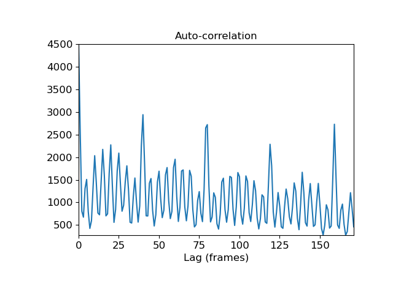

Caution
You're reading an old version of this documentation. If you want up-to-date information, please have a look at 0.9.1.
librosa.core.autocorrelate¶
- librosa.core.autocorrelate(y, max_size=None, axis=- 1)[source]¶
Bounded auto-correlation
- Parameters
- ynp.ndarray
array to autocorrelate
- max_sizeint > 0 or None
maximum correlation lag. If unspecified, defaults to y.shape[axis] (unbounded)
- axisint
The axis along which to autocorrelate. By default, the last axis (-1) is taken.
- Returns
- znp.ndarray
truncated autocorrelation y*y along the specified axis. If max_size is specified, then z.shape[axis] is bounded to max_size.
Notes
This function caches at level 20.
Examples
Compute full autocorrelation of y
>>> y, sr = librosa.load(librosa.util.example_audio_file(), offset=20, duration=10) >>> librosa.autocorrelate(y) array([ 3.226e+03, 3.217e+03, ..., 8.277e-04, 3.575e-04], dtype=float32)
Compute onset strength auto-correlation up to 4 seconds
>>> import matplotlib.pyplot as plt >>> odf = librosa.onset.onset_strength(y=y, sr=sr, hop_length=512) >>> ac = librosa.autocorrelate(odf, max_size=4* sr / 512) >>> plt.plot(ac) >>> plt.title('Auto-correlation') >>> plt.xlabel('Lag (frames)') >>> plt.show()
